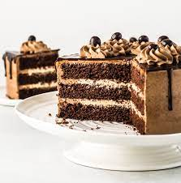
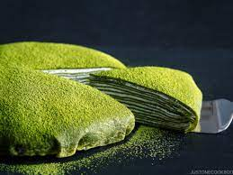
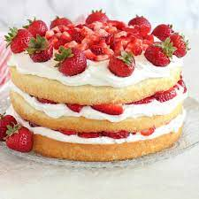
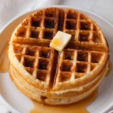
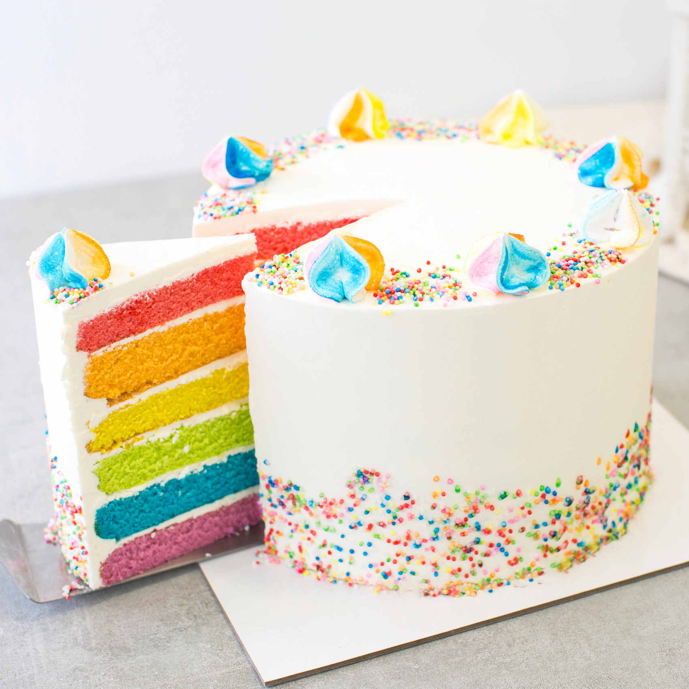

Featured Items
Blueberry Cheesecake

The delightful cheesecake you always love topped with delectable blueberries that brings tangy sweetness with every bite. It is a feel-good dessert for everyone. Blueberry cheesecake goes well with all kinds of dark tea and coffee.
Mocha Cake
This cake is rich and moist, filled with both sweetness of chocolate and the comforting flavor of coffee. Mocha cake is a go-to to be awakened and to feel good for the day. Mocha cake is best paired with white tea and other light-flavored drinks.
Matcha Crepe Cake
An extraordinary cake that will never fail to satisfy a craving despite of its simple flavor. Matcha Crepe Cake is best for those who does not have a sweet tooth, or those who are not in the mood to eat extremely sweet desserts. Best drinks for Matcha Crepe Cake, ironically, are sweet beverages.
Banana Bread

For anyone who wants a simple bite with a refreshing experience, banana bread is a perfect choice. Despite of its satisfyingly moist interior and cake-like structure, it is unfortunately not named a ‘cake’. Banana bread is subjectively good and refreshing with iced fruit tea.
Black Forest Cake

This dessert is a pleasant and most welcoming surprise. Black Forest cake is a luxurious dessert that perfectly balances the taste of rich, chocolate cake with the cool sweetness of cherries and light whipped cream. Soft tea beverages are recommended to pair with this cake.
Strawberry Shortcake
This classic dessert never fails to soothe a sweet tooth. This tender vanilla cake filled with layers of whipped cream frosting and sweet juicy strawberries will invite a gentle yet delightful celebration in a bite. Strawberry Shortcake fortunately pairs up with nearly all beverages.
Belgian Waffle
Belgian waffles will always be an adventurous choice. A healthy dessert that can be customized to be either sweet with cream, fruits, jam or syrup, or savory with chicken, butter, ham, sausage or bacon. Traditionally, waffles are breakfast foods so coffee beverages are perfect to pair with it.
Rainbow Cake
A stunning celebration cake stacked with different colors that can be enjoyed even without even celebrating anything! If colors can be edible, it would taste like rainbow…. And mostly almond. This cake can be paired with any types of beverages so all you need to worry about are the judging stares at your direction.